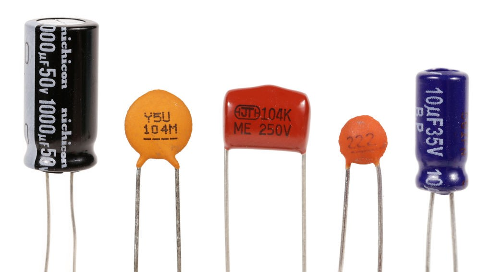
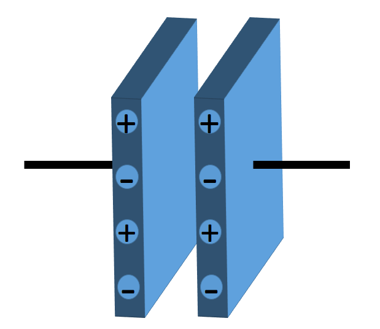
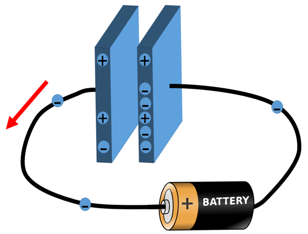
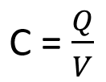

HOME BLOG EBOOKS ABOUT CONTACT SHOP
A capacitor is an electrical device that is used to store electrical energy. Isn’t that what batteries are for?? Yes…In a way, a capacitor is like a battery, they both store electrical energy. But the difference is in how they store energy and hence their applications differ. In a battery, chemical reactions produce electrons at one terminal and absorb electrons at the other terminal. Whereas, a capacitor is much simpler, it cannot produce new electrons, it only stores them.

Next to the resistor, the capacitor is the most commonly encountered component in electrical circuits. A capacitor is constructed out of two metal plates, separated by an insulating material called dielectric. The plates are conductive and they are usually made of aluminum, tantalum or other metals, while the dielectric can be made out of any kind of insulating material such as paper, glass, ceramic or anything that obstructs the flow of the current.
Since the plates are made of metal, they contain a huge no. of free electrons. In their normal state, the plates are neutral, as there is no excess or deficiency of electrons. But when we connect a power source to the metal plates of the capacitor, a current will try to flow i.e. the electrons from the plate connected to the positive lead of the battery will start moving to the plate connected to the negative lead of the battery. However, because of the dielectric between the plates, the electrons won’t be able to pass through the capacitor, so they will start accumulating on the plate. After a certain number of electrons accumulated on the plate, the battery will not have the sufficient energy to push any new electrons. This leaves the top plate with a deficiency of electrons (i.e. positive charge) and the bottom plate with an excess of electrons (i.e. negative charge). In this state, the capacitor is said to be charged. This state will remain even after the battery is removed and the Capacitor will only discharge once a load is connected across it.


The ability of a capacitor to store an electric charge is referred to as its capacitance. The capacitance C is the ratio of charge stored Q to the potential difference V between the conductors.

So a better capacitor would be the one able to store more charge for a particular voltage applied. Capacitance is measured in farads. This is a very large unit and hence most capacitors are rated in microfarads or less. The commonly used symbols for Capacitors are: